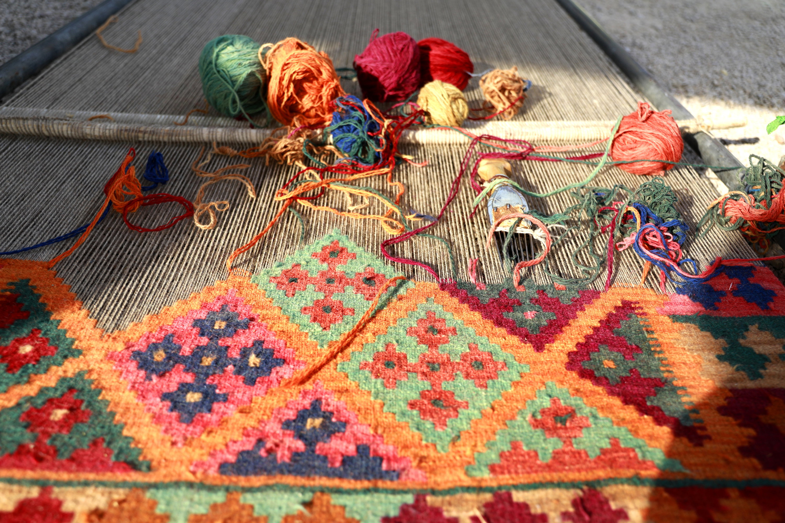

A Return to Craftsmanship
The Contemporary Era · 1925–TodayBy the early 20th century, the commercial boom had left its mark. Synthetic dyes had replaced natural ones. Standardized patterns had crowded out regional voices. The Persian rug had become a product.
The response was a revival — deliberate, careful, and driven by a new generation of collectors, designers, and weavers who understood what was at stake. Natural dyes were reintroduced. Master weavers trained in classical techniques were sought out and documented. The craft became, in many workshops, an act of cultural preservation.
The craft became an act of cultural preservation — deliberate, careful, and deeply alive.

Today, the finest Persian rugs are classified as fine art, exhibited in museums, auctioned alongside paintings, and collected by institutions across the world. A single masterwork can take a team of weavers a decade to complete.
But the most remarkable development is quieter: in villages and workshops across Iran, Afghanistan, and beyond, young weavers are learning the old patterns — not because they have to, but because they want to carry them forward.